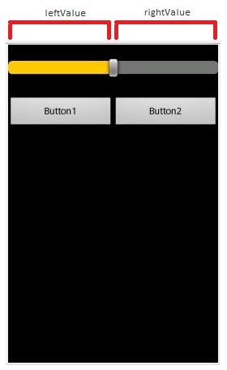
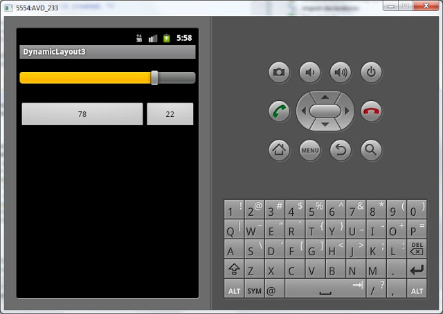

В этом уроке мы:
- изменяем layout-параметры для уже существующих компонентов экрана
Мы умеем создавать экранные компоненты и настраивать для них расположение с помощью LayoutParams. В этом уроке разберемся, как изменять layout-параметры уже существующих компонентов.
Менять мы будем вес – weight. Нарисуем SeekBar (регулятор или «ползунок») и две кнопки. И будем регулировать пространство занимаемое кнопками, используя параметр веса.
Создадим проект:
Project name: P0181_DynamicLayout3
Build Target: Android 4.0
Application name: DynamicLayout3
Package name: ru.startandroid.develop.dynamiclayout3
Create Activity: MainActivity
Открываем main.xml и создаем такой экран:
<?xml version="1.0" encoding="utf-8"?>
<LinearLayout
xmlns:android="http://schemas.android.com/apk/res/android"
android:orientation="vertical"
android:layout_width="fill_parent"
android:layout_height="fill_parent">
<SeekBar
android:layout_height="wrap_content"
android:layout_width="match_parent"
android:max="100"
android:progress="50"
android:layout_marginTop="20dp"
android:id="@+id/sbWeight">
</SeekBar>
<LinearLayout
android:id="@+id/linearLayout1"
android:layout_width="match_parent"
android:orientation="horizontal"
android:layout_height="wrap_content"
android:layout_marginTop="30dp">
<Button
android:layout_height="wrap_content"
android:id="@+id/btn1"
android:text="Button1"
android:layout_weight="1"
android:layout_width="wrap_content">
</Button>
<Button
android:layout_height="wrap_content"
android:id="@+id/btn2"
android:text="Button2"
android:layout_weight="1"
android:layout_width="wrap_content">
</Button>
</LinearLayout>
</LinearLayout>Мы используем компонент SeekBar. Он похож на полосу прокрутки и позволяет задавать какое-либо значение из диапазона. У этого компонента есть свойства max и progress. Max – это какое значение выдает SeekBar, когда он выкручен на максимум. Progress – это текущее значение ползунка. Максимум сделаем = 100, а текущее значение будет на половине – 50.
Кнопки у нас с шириной по содержимому и вес для обоих = 1. Они поровну делят пространство LinearLayout, в котором находятся.
Осталось только написать нужный код, чтобы все заработало. Открываем MainActivity.java, опишем и найдем компоненты и получим доступ к их LayoutParams.
public class MainActivity extends Activity {
SeekBar sbWeight;
Button btn1;
Button btn2;
LinearLayout.LayoutParams lParams1;
LinearLayout.LayoutParams lParams2;
public void onCreate(Bundle savedInstanceState) {
super.onCreate(savedInstanceState);
setContentView(R.layout.main);
sbWeight = (SeekBar) findViewById(R.id.sbWeight);
btn1 = (Button) findViewById(R.id.btn1);
btn2 = (Button) findViewById(R.id.btn2);
lParams1 = (LinearLayout.LayoutParams) btn1.getLayoutParams();
lParams2 = (LinearLayout.LayoutParams) btn2.getLayoutParams();
}
}Мы используем метод getLayoutParams для получения LayoutParams компонента. Но этот метод возвращает базовый ViewGroup.LayoutParams, а нам нужен LinearLayout.LayoutParams, поэтому делаем преобразование. В результате - lParams1 и lParams2 теперь являются LayoutParams для компонентов btn1 и btn2. Т.е. работая, например, с lParams1 мы влияем на btn1. Сейчас мы это используем.
Для SeekBar нужен будет обработчик, который будет реагировать на изменения. Это мы поручим Activity. Для этого надо добавить к описанию класса implements OnSeekBarChangeListener:
public class MainActivity extends Activity implements OnSeekBarChangeListener { @Override
public void onProgressChanged(SeekBar seekBar, int progress,
boolean fromUser) {
}
@Override
public void onStartTrackingTouch(SeekBar seekBar) {
}
@Override
public void onStopTrackingTouch(SeekBar seekBar) {
}Обработчик содержит три метода. Из названий понятно, что:
- onStartTrackingTouch срабатывает, когда начинаем тащить ползунок
- onProgressChanged срабатывает все время, пока значение меняется
- onStopTrackingTouch срабатывает, когда отпускаем ползунок
Мы будем использовать метод onProgressChanged. Так изменения будут видны во время перетаскивания ползунка.
@Override
public void onProgressChanged(SeekBar seekBar, int progress,
boolean fromUser) {
int leftValue = progress;
int rightValue = seekBar.getMax() - progress;
// настраиваем вес
lParams1.weight = leftValue;
lParams2.weight = rightValue;
// в текст кнопок пишем значения переменных
btn1.setText(String.valueOf(leftValue));
btn2.setText(String.valueOf(rightValue));
}переменная rightValue – то, что справа от ползунка, т.е. из максимума вычесть текущее значение.
Соответственно эти значения и используем как вес. Чем ползунок левее, тем меньше leftValue и больше rightValue, а значит меньше ширина btn1 и больше ширина btn2. И наоборот.

Также для наглядности в текст кнопок будем записывать значения переменных.
Ну и конечно не забываем, что надо обработчик (Activity) присвоить View-компоненту, события которого необходимо обрабатывать:
setContentView(R.layout.main);
sbWeight = (SeekBar) findViewById(R.id.sbWeight);
sbWeight.setOnSeekBarChangeListener(this);
btn1 = (Button) findViewById(R.id.btn1);Все сохраним и запустим приложение. Перетаскивая ползунок, меняем размеры кнопок:

Выглядит эффектно, я считаю ) И кода - всего несколько строк.
Есть небольшой нюанс. Как верно заметили в каментах, если просто написать код lParams1.weight = 1, то компонент не изменится. Необходимо дописать код: btn1.requestLayout(). Тогда кнопка прочтет Layout и перерисуется. Этот метод уже вызывается в setText, поэтому мы его здесь явно не вызываем.
Теперь мы знаем достаточно много, и на следующих уроках попробуем написать первое осмысленное приложение – калькулятор.
Полный код урока:
public class MainActivity extends Activity implements OnSeekBarChangeListener {
SeekBar sbWeight;
Button btn1;
Button btn2;
LinearLayout.LayoutParams lParams1;
LinearLayout.LayoutParams lParams2;
/** Called when the activity is first created. */
@Override
public void onCreate(Bundle savedInstanceState) {
super.onCreate(savedInstanceState);
setContentView(R.layout.main);
sbWeight = (SeekBar) findViewById(R.id.sbWeight);
sbWeight.setOnSeekBarChangeListener(this);
btn1 = (Button) findViewById(R.id.btn1);
btn2 = (Button) findViewById(R.id.btn2);
lParams1 = (LinearLayout.LayoutParams) btn1.getLayoutParams();
lParams2 = (LinearLayout.LayoutParams) btn2.getLayoutParams();
}
@Override
public void onProgressChanged(SeekBar seekBar, int progress,
boolean fromUser) {
int leftValue = progress;
int rightValue = seekBar.getMax() - progress;
// настраиваем вес
lParams1.weight = leftValue;
lParams2.weight = rightValue;
// в текст кнопок пишем значения переменных
btn1.setText(String.valueOf(leftValue));
btn2.setText(String.valueOf(rightValue));
}
@Override
public void onStartTrackingTouch(SeekBar seekBar) {
}
@Override
public void onStopTrackingTouch(SeekBar seekBar) {
}
}